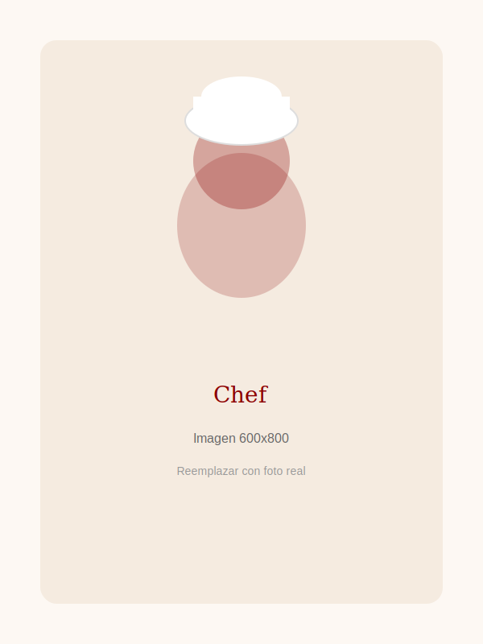
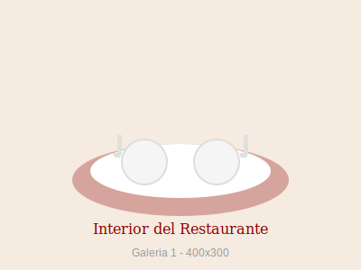
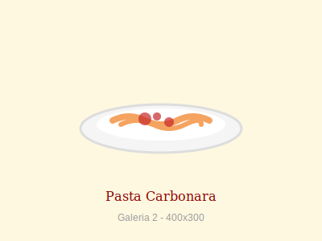
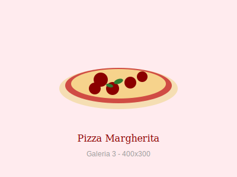
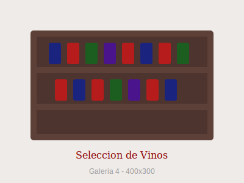
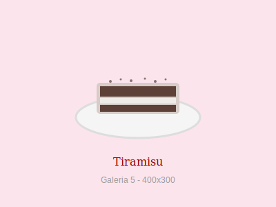
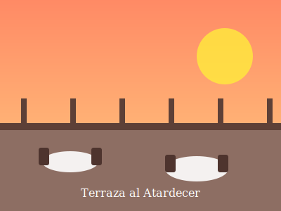
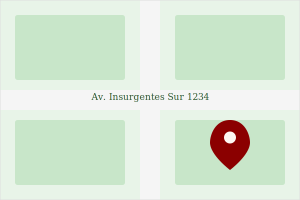

Rebanadas de pan tostado con ajo, tomate fresco, albahaca y aceite de oliva extra virgen.
Nuestra Historia
El Buen Sabor fue fundado en 1900 por el Chef Mario Luisinni, un inmigrante italiano que trajo consigo las recetas de su abuela desde Nápoles. Lo que comenzó como una pequeña trattoria familiar se ha convertido en un referente de la cocina italiana auténtica.
Cuatro generaciones después, seguimos honrando las recetas originales mientras incorporamos técnicas modernas. Cada platillo es preparado con ingredientes frescos y el mismo amor que el Chef Luisinni ponía en cada creación.
Hoy, bajo la dirección del Chef Alessandro Luisinni, bisnieto del fundador, El Buen Sabor continúa siendo el lugar donde las familias se reúnen para disfrutar de la verdadera esencia de Italia.

Galería






Ubicación y Horarios
Dirección
Av. Insurgentes Sur 1234
Col. Del Valle, Ciudad de México
CP 03100
Horarios
- Lunes a Jueves: 1:00 PM - 10:00 PM
- Viernes y Sábado: 1:00 PM - 11:30 PM
- Domingo: 1:00 PM - 9:00 PM
Reservaciones
Teléfono: (55) 1234-5678
WhatsApp: (55) 8765-4321
